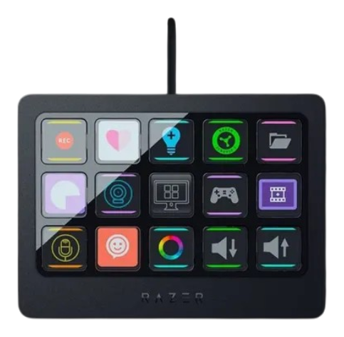

v1.1.0 / INDEPENDENT ENGINEERING
One continuous image across every key.
Turn the Razer Stream Controller X into a SignalRGB effect surface: native resolution, Canvas sampling and tile-based transfers. The final lab build preserves the accepted display path.
480 × 288
RGB565
15 tasti / keys
Trademarks identify the referenced products and belong to their owners. Independent project.
Inside the implementation.
One final DRAW per batch
Default Canvas, optional LCD
Native pixels. Real hardware.

Results and limits, documented.
Smoothness depends on runtime, content and power plan. The final lab Canvas sample reached approximately 8–9 fps; this is not a guarantee for every system.
STARGATE LABS
Portfolio ↗More from the lab.
Operational software, protocol research and hardware integrations.